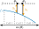
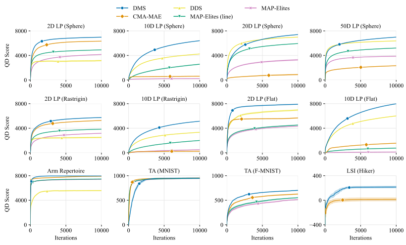
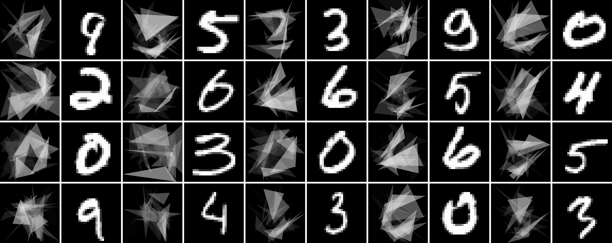

Discount Model Search for Quality Diversity Optimization in High-Dimensional Measure Spaces
ICLR 2026 (Oral)
Oral Session 6C (Sat 25 Apr 4:15PM - 4:25PM) Poster Session 5 (Sat 25 Apr 10:30AM - 1PM)


Bryon Tjanaka
University of Southern California
tjanaka@usc.edu
Henry Chen
University of Southern California
hchen365@usc.edu
Matthew C. Fontaine
University of Southern California
mfontain@usc.edu
Stefanos Nikolaidis
University of Southern California
nikolaid@usc.edu
Abstract
Quality diversity (QD) optimization searches for a collection of solutions that optimize an objective while attaining diverse outputs of a user-specified, vector-valued measure function. Contemporary QD algorithms are typically limited to low-dimensional measures because high-dimensional measures are prone to distortion, where many solutions found by the QD algorithm map to similar measures. For example, the state-of-the-art CMA-MAE algorithm guides measure space exploration with a histogram in measure space that records so-called discount values. However, CMA-MAE stagnates in domains with high-dimensional measure spaces because solutions with similar measures fall into the same histogram cell and hence receive the same discount value. To address these limitations, we propose Discount Model Search (DMS), which guides exploration with a model that provides a smooth, continuous representation of discount values. In high-dimensional measure spaces, this model enables DMS to distinguish between solutions with similar measures and thus continue exploration. We show that DMS facilitates new capabilities for QD algorithms by introducing two new domains where the measure space is the high-dimensional space of images, which enables users to specify their desired measures by providing a dataset of images rather than hand-designing the measure function. Results in these domains and on high-dimensional benchmarks show that DMS outperforms CMA-MAE and other existing black-box QD algorithms.
Quality Diversity (QD) Optimization
QD is a branch of stochastic optimization that searches for solutions that maximize an objective $f$ while having diverse measures (measurable characteristics) $\boldsymbol{m}$. The solutions are stored in an archive, often represented as a grid in the measure space. The goal of QD, then, is to find a solution in each cell with maximal objective $f$.

An example QD archive where the objective is "a photo of Tom Cruise". Here, the measure space is two-dimensional, consisting of age and hair length, so the result is an archive showing Tom Cruise with different ages and hair lengths. Credit: Fontaine 2023
Distortion and High-Dimensional Measure Spaces
We seek to enhance exploration of the measure space in existing QD algorithms. We are especially interested in high-dimensional measure spaces because they offer the opportunity for more flexible specifications of diversity. For instance, while the example above uses just two measures, we envision providing thousands of measures!
We hypothesize that a major obstacle to exploring the measure space is distortion, and that distortion is particularly prevalent in high-dimensional measure spaces. To elaborate, distortion in QD refers to when large areas of solution space map to a small region of measure space (Fontaine 2023). Although distortion exists in low-dimensional measure spaces (Fontaine 2021), it is more prominent in high-dimensional measure spaces because there are exponentially larger volumes to which solutions can map.
One algorithm affected by distortion is CMA-MAE (Fontaine 2023). CMA-MAE guides search by recording a discount value in each cell of the archive, forming a histogram over the measure space that we term the discount function $f_A$. In domains with high distortion, particularly domains with high-dimensional measures, solutions fall into the same histogram cell and receive the same discount value, making it difficult for CMA-MAE to tell them apart.
Discount Model Search (DMS)
To improve exploration in domains with distorted, high-dimensional measure spaces, we propose DMS. DMS trains a discount model to provide a smooth, continuous representation of the discount function.

The key insight of DMS is that such a representation provides distinct discount values and improvement values, even when solutions have similar measures, making it easier to guide search towards solutions that improve the archive.

DMS proceeds by first sampling solutions from a multivariate Gaussian distribution. Next, it evaluates those solutions and inserts them into the archive. Then, the discount model is used to compute archive improvement for the solutions. Finally, this archive improvement signal enables adapting the sampling distribution of solutions using the CMA-ES algorithm. On the next iteration, solutions sampled from this distribution are more likely to further improve the archive.
Results
We evaluate DMS on a wide variety of domains, including standard QD benchmarks and three QDDM domains. Across nearly all domains, DMS significantly outperforms existing black-box QD algorithms.
QD Score across all domains. The QD Score is a holistic metric that sums the objective values of all solutions in the archive.
Quality Diversity with Datasets of Measures (QDDM)
DMS further enables QDDM, where instead of designing measure functions, the user provides high-dimensional data indicating their desired measure values, e.g., images, audio, or text. Then, the measure space is the space of such data. For example, consider searching for images of hikers in different landscapes. Traditionally, QD would seek to design a measure function that outputs the location of the hiker based on their image. Instead, with QDDM, we can provide a dataset of landscape images as desired measure values. The images we find will then be of hikers in the different landscapes. Note that since the landscape images are $256 \times 256 \times 3$ RGB images, we effectively search in a measure space that has $256 * 256 * 3 = 196,608$ dimensions!
Results from our LSI (Hiker) domain, where the objective is "A photo of the face of a hiker," and the measures are images showing the landscape where the hiker belongs. The desired measures are specified with images from the LHQ dataset. Each hiker is shown to the left of their corresponding landscape.
We find this approach highly general, as datasets are ubiquitous in machine learning. For instance, in our Triangle Arrangement domain, the measures are $28 \times 28$ images drawn from the MNIST dataset, and we seek to arrange triangles to match the digits.

Conclusion
By searching in distorted and high-dimensional measure spaces, DMS offers two benefits for QD practitioners. First, DMS can improve performance in current QD applications, as the experimental results show that DMS outperforms current algorithms in various domains. Second, DMS enables new applications by addressing the proposed QDDM setup, where diversity in a high-dimensional measure space like images is specified by providing a dataset. We believe framing measures in terms of datasets makes QD more accessible by not only alleviating the need to hand-design measure functions, but also making it possible to specify measures that cannot easily be represented by low-dimensional values. Overall, given that datasets are central to machine learning, we believe it will prove fruitful to frame problems across machine learning as QDDM problems and solve them with algorithms like DMS.
Acknowledgments
We thank Varun Bhatt, Saeed Hedayatian, and Aaquib Tabrez for their insightful feedback. This work was partially supported by the NSF CAREER (#2145077), NSF NRI (#2024949), NSF GRFP (#DGE-1842487), and the DARPA EMHAT project.
Citation
@inproceedings{
tjanaka2026discount,
title={Discount Model Search for Quality Diversity Optimization in High-Dimensional Measure Spaces},
author={Bryon Tjanaka and Henry Chen and Matthew C. Fontaine and Stefanos Nikolaidis},
booktitle={The Fourteenth International Conference on Learning Representations},
year={2026},
url={https://openreview.net/forum?id=m6Hv0yZO3n}
}